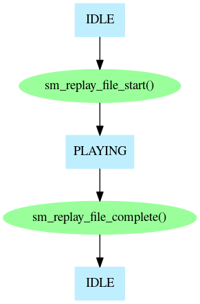
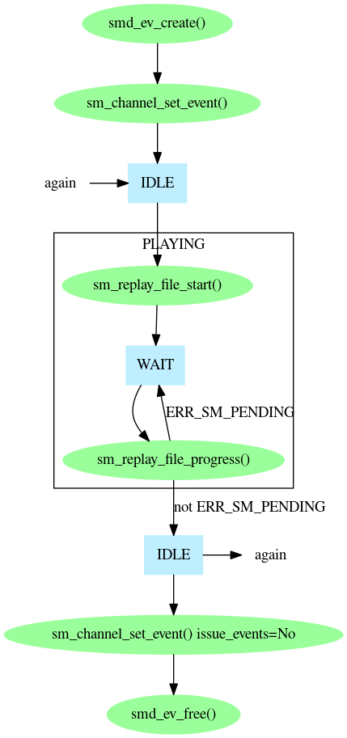
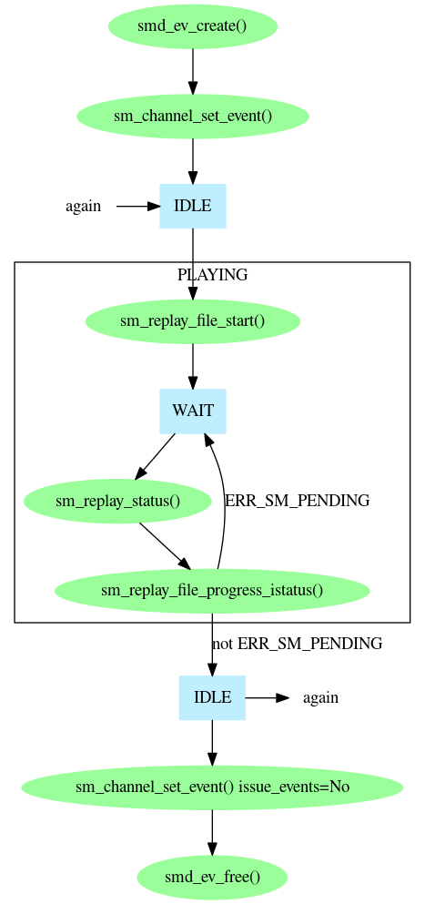
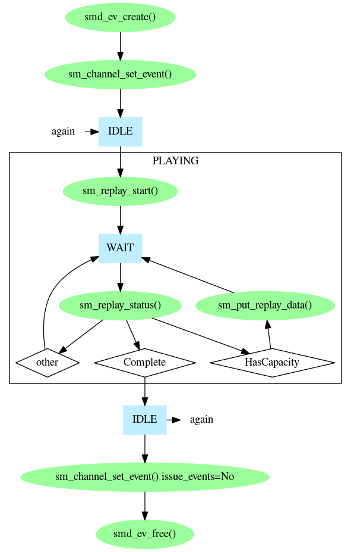

There are several ways to use Prosody to play data. The easiest is to use the Prosody high level FILE play/record API. This is very convenient when you want to replay data contained in a file. However, for complete control over the playing process, you can use the low level primitives which are part of the Prosody speech processing API. All of the methods are described here.
Note that if you want to generate tones (including call progress tones), or DTMF digits, Prosody can do this directly, (as described in Prosody Guide - how to play tones and digits) so you don't need to have files containing recordings of tones.
To play data you need a Prosody channel which can perform output. This means one of the following:
The output from the channel must also have been connected appropriately. See Prosody Guide - how to use datafeeds for how to do this.
The easiest way to play data is to use sm_replay_file_start() and sm_replay_file_complete().

Since sm_replay_file_complete() does not return until the whole of the replay has finished, you will need a separate thread for each replay. You can avoid this by using sm_replay_file_progress() instead. This only does the processing immediately necessary, so you can have a single thread which does a mixture of processing - calling sm_replay_file_progress() as necessary for each channel which is playing. Of course, this means you need to know when a channel needs servicing, so you need to use a Prosody event. You create the event and associate it with the channel. Then you can perform as many replays as you like, before dissociating the event from the channel and freeing the event.

Since sm_replay_file_progress() performs all the processing for a replay, you cannot find out the status yourself. (Don't be tempted to try calling sm_replay_status() before or after calling sm_replay_file_progress() as this can confuse the high-level API library and make it return errors). To allow you to find out the status safely, Prosody provides an alternative to sm_replay_file_progress() which merely uses the status you supply. This function is sm_replay_file_progress_istatus(). To use it, you fetch the status yourself with sm_replay_status() and then call sm_replay_file_progress_istatus(). This allows you, for example, to log the occurrence of underruns.

If you want to stop a replay before it has finished (for example, where the replay is sending a prompt to a caller who has hung up), you can call sm_replay_file_stop(). This requests that the replay stop. Note! Even when you stop a replay like this, you must wait for the completion of the replay to be reported in the usual way (such as by sm_replay_file_complete() returning).
There are several reasons why the high level API may not be powerful enough for an application. For example, you may want to use a feature not supported by the high-level API or the data may not be coming from a file. The use of the low-level API is reasonably straightforward:
kSMReplayStatusComplete
then the replay has finished.
kSMReplayStatusHasCapacity
the replay is ready for more data. Give it more data by
calling
sm_put_replay_data() or
sm_put_last_replay_data()
You can stop the replay in several ways. You can specify a maximum amount of data to be used when you call sm_replay_start(); you can call sm_put_last_replay_data(); or you can call sm_replay_abort() to request that it stop. Note that in all cases you still must wait for sm_replay_status() to indicate completion. If you use sm_replay_abort(), by default it waits for the Prosody processor to report exactly where the replay stopped. In a multi-threaded program this can be a nuisance, especially when the thread doing the abort may need to abort many different channels of replay. You can avoid this delay by telling it not to wait and, although in that case it cannot report where the replay stopped, this information is always provided by sm_replay_status() when it reports that the replay has completed.
